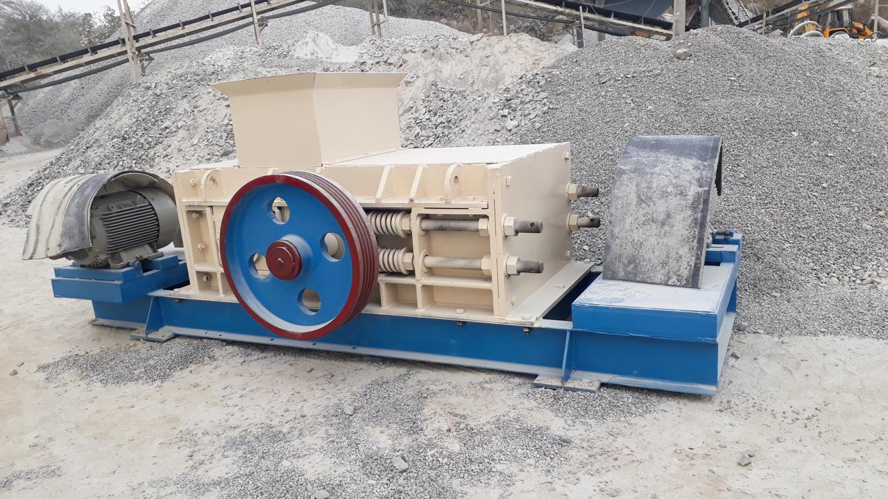

Our Products

Jaw Crushers
Purpose: Primary crushing of large hard materials like granite, basalt, and limestone.
Available Sizes: 30 TPH to 800 TPH
Applications: Mining operations, road construction aggregates, cement plants, and rock crushing.
Features:
- Heavy-duty structure
- High reduction ratio
- Adjustable Closed Side Setting (CSS)
- Hydraulic toggle systems (optional)

Cone Crushers
Purpose: Secondary and tertiary crushing to produce fine and uniform aggregates.
Available Sizes: 50 TPH to 500 TPH
Applications: Road base production, concrete aggregates, railway ballast.
Features:
- Hydraulic tramp release mechanism
- Automated control systems for settings
- Easy wear liner replacement
- Robust construction for high-demand applications

VSI & HSI Crushers
Purpose: Shaping and producing cubical sand and aggregates with excellent particle shape.
Available Sizes: 50 TPH to 300 TPH
Applications: M-Sand manufacturing, plaster sand, high-quality asphalt mixes, concrete production.
VSI Features:
- Rock-on-rock or rock-on-anvil crushing principle
- High RPM rotors for superior particle shape
- Adjustable feed tubes
HSI Features:
- High reduction ratio
- Produces well-shaped cubical products
- Suitable for primary, secondary, or tertiary crushing of softer materials

Roller Crushers
Purpose: Fine crushing of medium to soft materials with minimal fines generation.
Available Sizes: 50 TPH to 100 TPH
Applications: Coal, coke, salt, clay, soft limestone, and other friable materials.
Features:
- Low dust and noise emission
- Minimal fines generation
- Smooth or toothed rollers available
- Adjustable roller gap for product size control

Vibrating Screens
Purpose: Screening and grading materials into multiple precise sizes.
Available Sizes: 2, 3, and 4 Deck configurations; capacity up to 400 TPH
Applications: Aggregate screening, mineral separation, sand classification, recycling plants.
Features:
- High screening efficiency
- Rubber or spring-mounted decks for vibration isolation
- Counterbalance weights for smooth operation
- Easy maintenance and screen mesh replacement
- Robust design for heavy-duty applications

Grizzly Feeders
Purpose: To feed large lumps of material into primary crushers while simultaneously separating fines or smaller particles.
Available Sizes: 50 TPH to 400 TPH
Applications: Quarry primary feeding stations, pre-screening in mining operations, C&D waste processing.
Features:
- Adjustable grizzly bars for varying separation sizes
- Heavy-duty construction for impact resistance
- Powered by robust vibrating motors for consistent feed rate
- Reduces load on primary crusher and improves efficiency

Sand Dryers
Purpose: To reduce the moisture content in sand for various construction or industrial applications.
Available Sizes: 20 TPH to 50 TPH
Applications: Foundries, construction sand, ready-mix concrete plants, silica sand drying, glass manufacturing.
Features:
- LPG/Natural Gas/Diesel-fired options
- Automatic temperature control for consistent drying
- Cyclone separator for dust collection and efficiency
- Rotary drum design for uniform drying
- Heat control PCB for precise temperature management
- Adjustable heat zones (maintain under 2% moisture)

Silos
Purpose: Storage of dry bulk materials like sand, cement, fly ash, or fine aggregates.
Available Sizes: 15 Tons to 60 Tons capacity
Applications: Batching plants, aggregate storage, recycling facilities, cement plants, road construction sites.
Features:
- Cone bottom for easy material discharge
- Manual or automated discharge gate
- Level indicators (optional)
- Air vent system or dust collector on top
- Robust steel construction

Hoppers
Purpose: Initial loading point for raw material to be processed, ensuring controlled feed to downstream equipment.
Available Sizes: 5 Tons to 30 Tons capacity
Applications: C&D waste recycling intake, raw material feeding for crushers and screens, aggregate plants.
Features:
- Reinforced body for durability
- Vibrator mounted (optional) for smooth material flow
- Grizzly top (optional) for pre-screening large objects
- Designed for easy loading by excavators or loaders

Control Panels
Purpose: Centralized control, monitoring, and automation for all plant equipment, ensuring efficient and safe operation.
Type: PLC or SCADA enabled
Applications: Crushing & Screening Plant Automation, Sand Processing Plants, Recycling Units, Safety Control Systems.
Features:
- Variable Frequency Drives (VFDs) for motor speed control
- Temperature control units
- Alarms and safety interlocks
- User-friendly HMI (Human Machine Interface)
- Customizable logic for specific plant requirements
- Robust enclosure for industrial environments

C&D Recycling Units
Purpose: Processing of construction and demolition (C&D) debris into reusable materials like aggregates and sand.
Available Sizes: 30 TPH to 50 TPH
Applications: Urban construction projects, smart city waste handling, demolition site recycling, landfill reduction.
Features:
- Integrated systems including pre-sorting hoppers, trommel screens, and crushers
- Metal separator (magnetic) for ferrous material removal
- Air classifiers or density separators (optional) for light waste removal
- Modular design for easy setup and relocation
- Helps comply with environmental norms for waste management

Custom Conveyors & Material Handling Systems
Purpose: Efficient transportation of crushed, screened, or processed material between different machines and stockpiles.
Available Types:
- Belt Conveyors (Fixed, Mobile, Radial Stackers)
- Inclined Conveyors
- Screw Conveyors (for fine materials)
- Customized transfer points and chutes
Applications: Integral part of any crushing, screening, sand processing, or recycling plant for optimizing material flow.
Features:
- Durable idlers, rollers, and pulleys
- High-quality conveyor belts suitable for abrasive materials
- Reliable geared motors and drive systems
- Covered or open-type options based on application
- Safety features like emergency pull cords and guards
- Designed for specific plant layout and throughput requirements
Need a custom solution?
We design and manufacture equipment tailored to your specific requirements. Talk to our engineering team today.